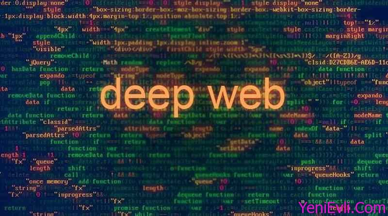

DEEP WEBLa Deep Web es la parte de Internet que no aparece en los motores de búsqueda tradicionales. |
||
|---|---|---|
|

Funciones de la Deep WebAlmacenamiento de datos privados: La deep web incluye bases de datos que almacenan información sensible, como registros médicos, correos electrónicos, cuentas bancarias en línea o documentos en la nube, accesibles solo con credenciales específicas. Gestión de recursos institucionales: Universidades, empresas y gobiernos utilizan la deep web para alojar sistemas internos, como intranets corporativas, plataformas de gestión de clientes (CRM) o bases de datos académicas, que no están diseñadas para ser públicas. Protección de la privacidad: Al no estar indexada, la deep web permite proteger información confidencial, garantizando que solo las personas autorizadas puedan acceder a ella, como en el caso de registros legales o investigaciones científicas. Apoyo o soporte a operaciones digitales: Gran parte de la infraestructura de internet, como servidores de correo o sistemas de almacenamiento en la nube, opera en la deep web, facilitando servicios esenciales para usuarios y organizaciones. Acceso al dark web: Dentro de la deep web se encuentra el dark web, que permite a los usuarios realizar actividades anónimas, como compartir información sensible (por ejemplo, denuncias anónimas) o, en algunos casos, participar en actividades ilegales.Audio ExplicativoEscucha una explicación breve sobre la Deep Web y sus usos. Consideraciones ImportantesLegalidad y ÉticaEl acceso a estos recursos debe realizarse de manera autorizada mediante credenciales institucionales o suscripciones legítimas. Utilizar accesos no autorizados o credenciales de terceros constituye una práctica ilegal y poco ética. SeguridadAunque estos contenidos son legítimos, se recomienda utilizar redes seguras y sistemas oficiales de autenticación para proteger la información personal y evitar riesgos de seguridad informática. ConclusiónLa deep web proporciona acceso seguro y legal a recursos académicos, científicos e investigativos que no son visibles en los motores de búsqueda tradicionales. Gracias a estos recursos, estudiantes, investigadores y profesionales pueden obtener información especializada y de alta calidad para sus proyectos y actividades académicas.
|
||